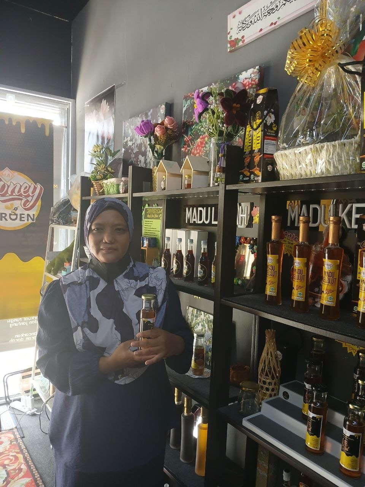

Biodata

Nama: Muhaini Binti Mat Isa
Gelaran: Kak Muhaini
Umur: 44 tahun
Status: Berkahwin
Jawatan: Pembantu Pengurus Madu (SA)
Pendidikan: SPM Pernah menjadi tenaga pengajar dalam beberapa khusus dan mendapat gaji.
Perniagaan ini hanyalah kerja sampingan kerana perniagaan ini milik keluarga saya.
Sebelum ini, saya pernah bekerja dalam pengurusan di pejabat di bahagian audit,penjualan dan pengurusan pekerja.
Saya mula terlibat dalam perniagaan madu kelulut ini sejak 3 hingga 4 tahun lepas.
Perniagaan ini mula beroperasi selepas kita dilanda Covid-19.
Kami mula terlibat dalam perniagaan madu ini kerana madu ini mempunyai banyak khasiat yang dapat menbantu orang ramai.
Pada awalnya, perniagaan ini mendapat sambutan dan permintaan tinggi dari orang ramai kerana ketika itu madu mempunyai khasiat yang dapat meelegakan batuk.
Muhaini bt Isa merupakan seorang pekerja yang komited di Madu Kelulut Mai Honey Garden, Perlis. Beliau terlibat dalam penjagaan sarang kelulut, penghasilan madu, dan berkongsi ilmu tentang manfaat madu kelulut dengan masyarakat tempatan.